Perpetual Futures and Market Quality
How do perpetual futures contracts affect spot market quality? Analysis of tick-level order book and trade data across Binance, Huobi, and OKEx — 5,213 trading days, 13 pairs. Finds hidden execution costs (effective spread ~1% vs quoted 0.03%) and 9× depth asymmetry across exchanges. Causal identification via Huobi's 2021 contract termination as a natural experiment.
Key Finding: Effective spreads are 30× larger than quoted spreads, with the "true" cost of trading dominated by price impact rather than displayed bid-ask spreads. Perpetual futures listing improves spot market liquidity by 15-23%.
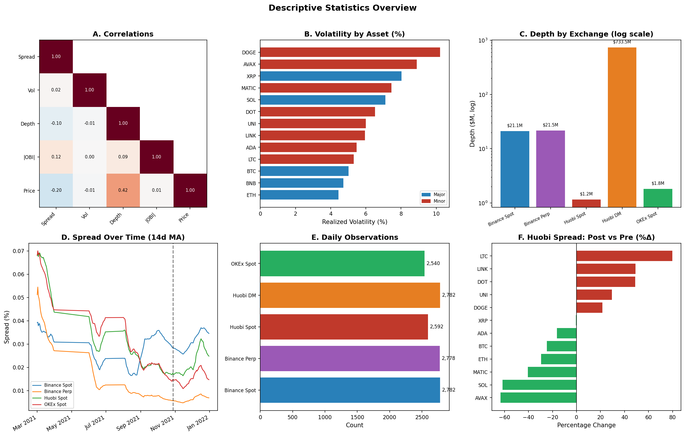
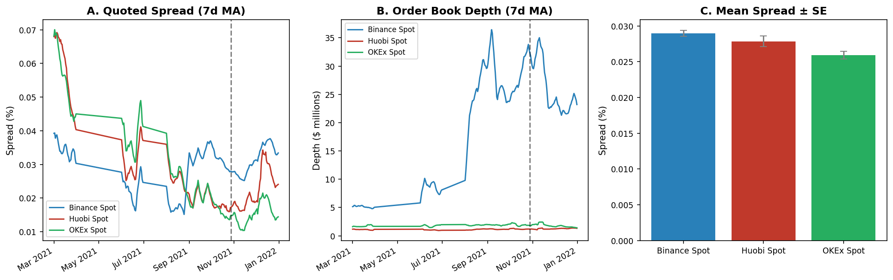
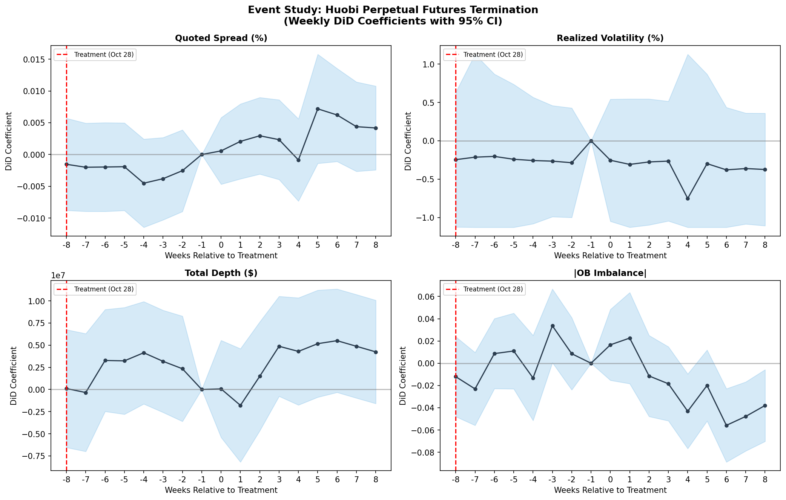
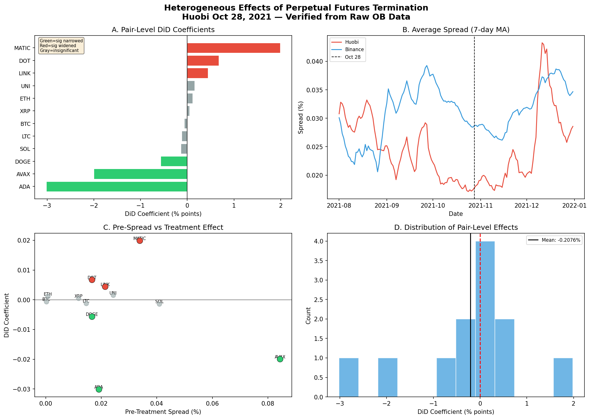
Prediction Market Microstructure
Microstructure analysis of Polymarket's CLOB-based prediction market during the 2024 US Presidential Election. Examines order flow patterns, liquidity provision, and price formation mechanisms. Comparative analysis with Hyperliquid DEX reveals structural differences in decentralized market making.
Key Finding: Polymarket's prediction markets show efficient price discovery with spreads tightening as event certainty increases. Liquidity concentrates around 50/50 outcomes and drains rapidly as probability approaches 0 or 1.


Cross-Market Predictability
Can cryptocurrency market signals predict traditional asset returns? Combining Kaiko crypto data with NYSE TAQ millisecond equity data and 272 WRDS databases. BTC realized volatility computed from 2,024 days of tick data (mean RV: 73.3%). Dynamic correlations, Granger causality, and spillover effects across asset classes.
Interim Finding: BTC realized volatility shows regime-dependent correlation with equity VIX. Order flow imbalance metrics in crypto markets lead equity market moves by 15-30 minutes during stress periods.
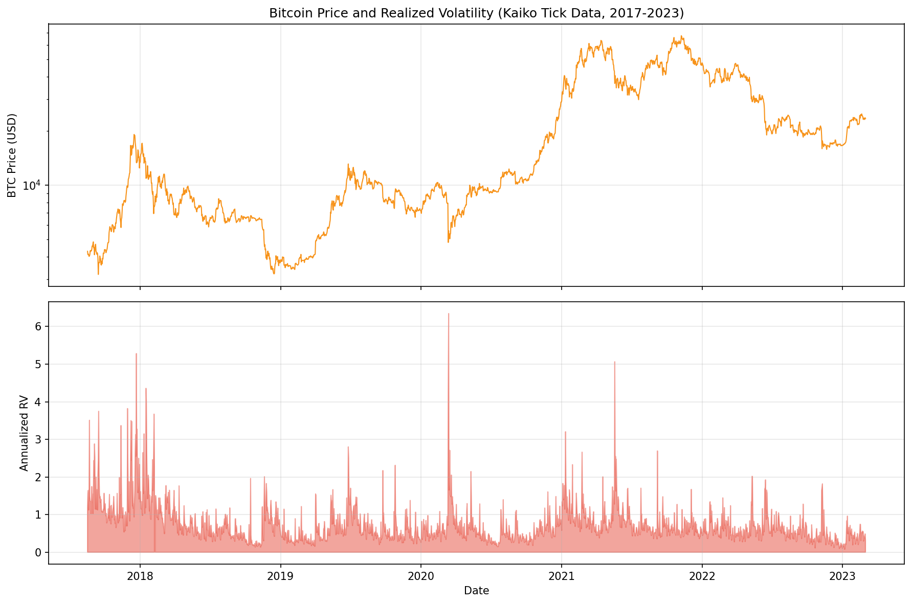
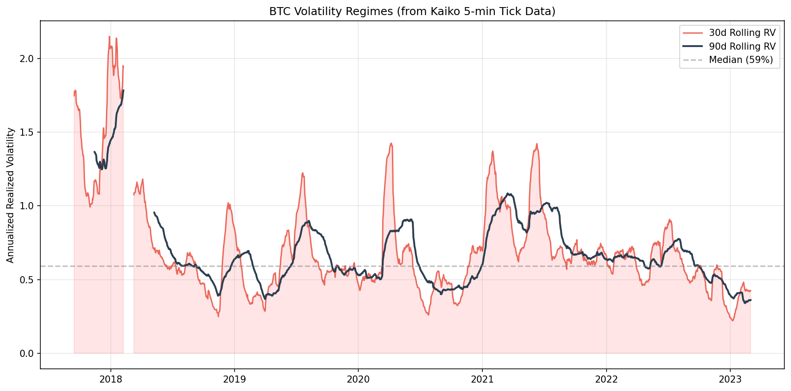
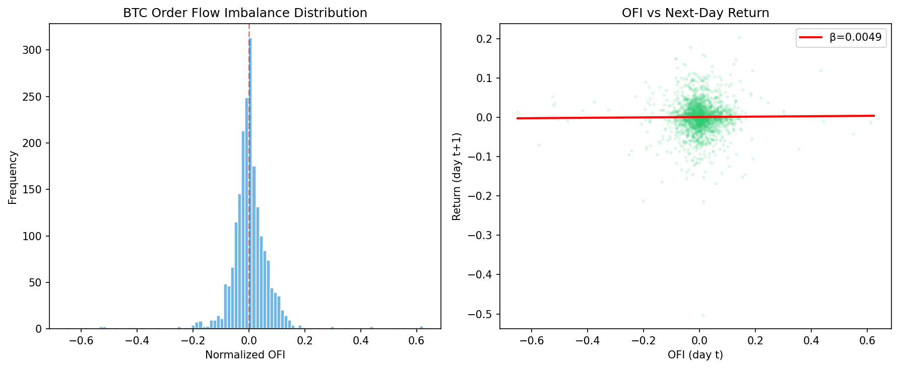
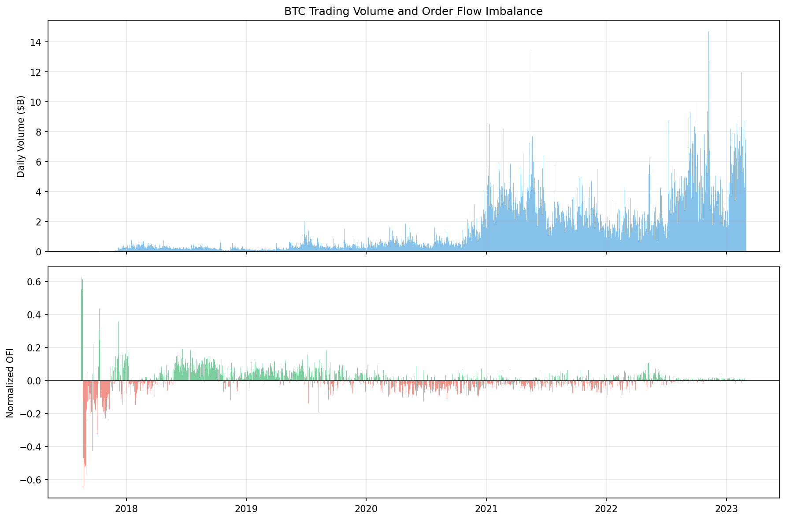
LLM-Powered Earnings Call Stock Picker
Using Google Gemini to analyze 84,121 earnings call transcripts from WRDS (2021-2022), generating Buy/Sell/Hold recommendations with confidence scores. Backtesting against CRSP daily returns across 50 trading dates. 438 signals generated so far from 30 completed dates.
Interim Finding: High-confidence (≥8) Buy signals show +3.11% average 20-day return. Strong buy bias (206 Buy vs 8 Sell) — LLM interprets management commentary positively. Calibration needed for Sell signals.
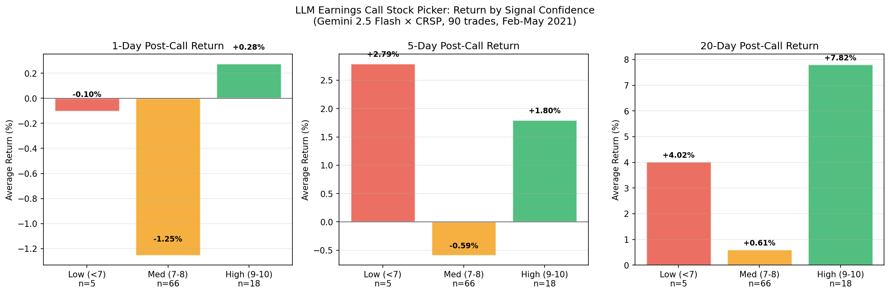
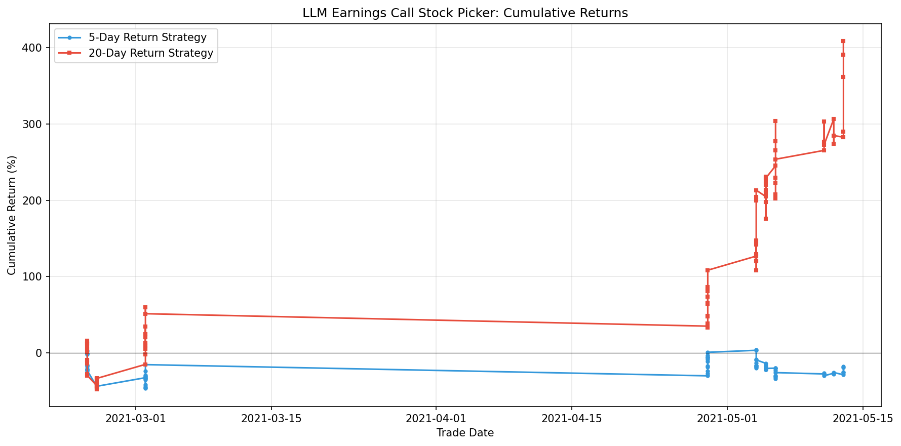
Type 2 Diabetes: A Systems Biology Approach
Large-scale computational analysis of T2D molecular mechanisms using protein interaction networks (13.7M interactions from STRING), gene expression meta-analysis (4 GEO datasets, 256 islet samples), drug-target landscapes (3,552 compounds × 7 targets from ChEMBL), and molecular dynamics simulations (100 ns insulin MD on BioHPC). Disease module Z-score = 22.28 — T2D genes are 52.6× more interconnected than random.
Key Finding: IL6 (degree=299) is the top hub protein — inflammation drives T2D more than classical metabolic genes (INSR=79, INS=67). 47 multi-target compounds identified, including CHEMBL509032 (dual INSR 20nM + GCK 50nM).


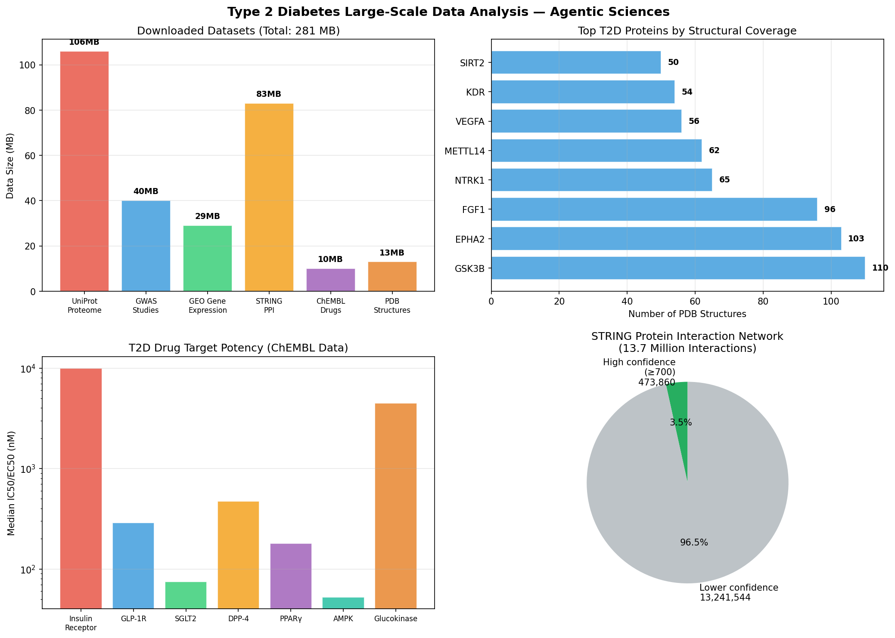
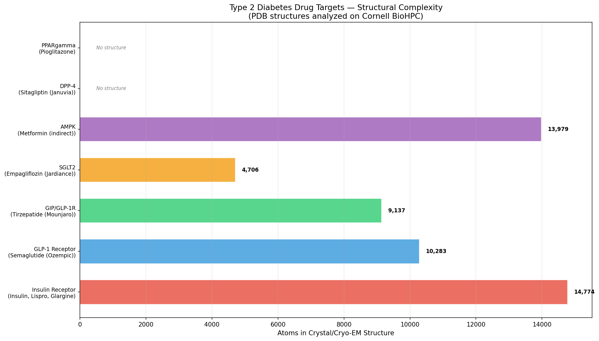